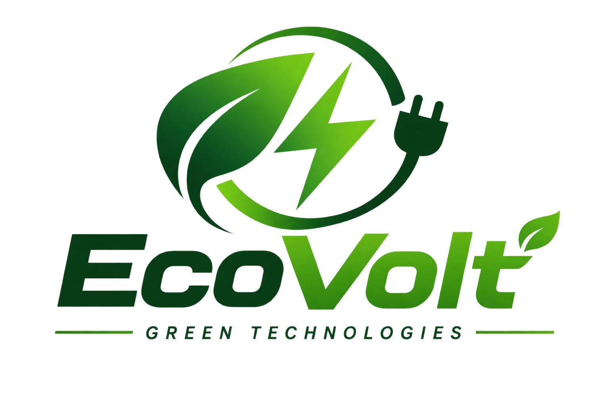

Немає контролю
Складно зрозуміти, скільки електроенергії споживає кожна група приладів.

GREEN TECHNOLOGIES · SMART ENERGY
Eco Volt — інтелектуальна система контролю, захисту та керування електроспоживанням.
Познайомитися з Eco Volt →
ХТО МИ
Eco Volt — проєкт із розробки інтелектуальних електричних щитів, які допомагають контролювати споживання електроенергії, захищати електромережу та оптимізувати витрати.
Наша ідея — об'єднати електричний захист, моніторинг споживання, дистанційне керування та аналітику на основі штучного інтелекту в одній системі.
Ми прагнемо зробити використання електроенергії безпечнішим, економнішим і зручнішим для квартир, приватних будинків та малого бізнесу.
ПРОБЛЕМА, ЯКУ МИ ВИРІШУЄМО
Часто користувачі не знають, скільки електроенергії споживають їхні прилади та як ефективніше використовувати електромережу.
Складно зрозуміти, скільки електроенергії споживає кожна група приладів.
Нераціональне використання електроприладів може збільшувати рахунки.
Зміни параметрів електроживлення можуть створювати ризики для обладнання.
Не завжди зручно контролювати роботу окремих груп електроприладів.
НАШ ПРОДУКТ
Eco Volt поєднує моніторинг, захист, аналітику та керування електроспоживанням.

Система збиратиме дані про споживання електроенергії, аналізуватиме їх та передаватиме користувачеві через програмне забезпечення.
ЛІНІЙКА ПРОДУКЦІЇ
Попередні цінові пропозиції нашої концепції.
Базове рішення для невеликих квартир.
Розширені можливості для будинків та квартир.
Рішення для малого бізнесу та підприємств.
Ціни попередні та потребують уточнення після розрахунку собівартості, складання, випробувань і встановлення.
ЩО МИ ПРОПОНУЄМО
У майбутньому Eco Volt планує пропонувати інтелектуальні рішення для різних потреб.
Контроль споживання, аналіз витрат та зручне керування електроприладами.
Моніторинг енергоспоживання магазинів, кафе, офісів та майстерень.
Аналіз даних, пошук незвичайних змін та рекомендації щодо оптимізації витрат.
Виявлення незвичних змін у роботі електроприладів та попередження користувача.
СПРОБУЙТЕ САМІ
Оберіть ситуацію та подивіться, як майбутня система могла б на неї реагувати.
ECOVOLT SMART SYSTEM
Оберіть ситуацію:
АНАЛІЗ СИТУАЦІЇ
Eco Volt помітив зміну характеру споживання електроенергії порівняно зі звичайними показниками.
Проаналізувати зміни та повідомити користувача про незвичне споживання.
ECOVOLT · GREEN TECHNOLOGIES
Ми працюємо над тим, щоб контроль електроенергії став простішим, зрозумілішим та ефективнішим.
На початок ↑